In dem Register "Zusatz" können weitere Informationen zu dem Beleg erfasst bzw. editiert werden.
Hinweis
Weitere Informationen bezüglich des Erfassens von Belegen und den Buttons des Programms "Belegerfassen" sind dem Kapitel Belegerfassen zu entnehmen.
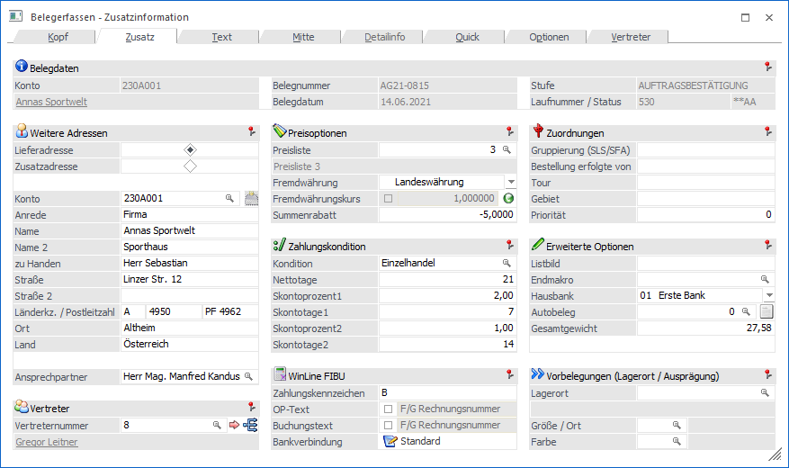
Folgende Eingabefelder, Einstellungen und Information stehen zur Verfügung:
Belegdaten

Ø Konto
An dieser Stelle wird die Nummer des Hauptkontos (WinLine START - Parameter - FAKT-Parameter - Belege - Allgemein - Option "Hauptkonto für Belege") des aktuellen Belegs angezeigt.
Ø Name
An dieser Stelle wird der Kontoname der Kontonummer dargestellt und das Fenster Kontoinformation kann direkt geöffnet werden.
Ø Belegnummer
An dieser Stelle wird die Belegnummer des Belegs angezeigt.
Ø Belegdatum
Hier wird das Belegdatum des Belegs dargestellt.
Ø Stufe
An dieser Stelle wird die Belegstufe des Belegs angezeigt. Wird ein Beleg in eine nachfolgende Belegstufe gewandelt, so wird hier die "Zielbelegstufe" dargestellt, die Laufnummer stammt hingegen noch vom "Ausgangsbeleg".
Ø Laufnummer/Status
Hier wird die Laufnummer, sowie der Staus des Beleges und dessen Folgestufen angezeigt.
Weitere Adressen
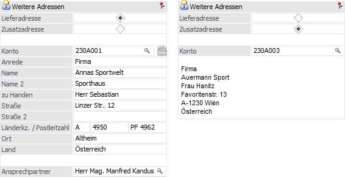
In diesem Bereich können weitere Adressen für den Beleg hinterlegt werden.
Ø Lieferadresse / Rechnungsadresse
Je nachdem, was das Hauptkonto für Belege ist (WinLine START - Parameter - FAKT-Parameter - Belege - Allgemein - Option "Hauptkonto für Belege"), kann an dieser Stelle das "nicht Hauptkonto" hinterlegt werden (in der Regel die Lieferadresse). Die Lieferadresse wird dabei automatisch mit der Rechnungsadresse vorbesetzt, kann dabei aber jederzeit, durch Eingabe einer anderen Personenkontonummer, überschrieben werden.
Hinweis
Wenn die Lieferadresse bisher nicht als Personenkonto angelegt wurde, dann kann das Feld "Konto" übersprungen werden (TAB, Return oder per Mausklick) und eine manuelle Erfassung der Adresse erfolgen.
Ø  Adressdaten aktualisieren
Adressdaten aktualisieren
Durch Drücken dieses Buttons (und entsprechender Bestätigung der Sicherheitsabfrage) können die Adressdaten des angegebenen "Kontos" in den Stammdatensatz (Personenkonten- bzw. Interessentenstamm) übergeben werden. Hierbei werden in dem Stammdatensatz folgende Werte aktualisiert:
ü Anrede
ü zu Handen
ü Straße
ü Straße 2
ü Landeskennzeichen
ü PLZ
ü PLZ2
ü Ort
ü Land
Hinweis
Der Button steht nur zur Verfügung, wenn die Option "Adresse im Belegerfassen aktualisieren" in den FAKT-Parametern (Belege - Erweiterte Optionen) aktiviert wurde.
Ø Zusatzadresse
Zusätzlich bzw. alternativ zur Lieferadresse / Rechnungsadresse besteht die Möglichkeit eine Zusatzadresse zu hinterlegen. Hierbei könnte es sich z.B. um eine "Kommissionsadresse" oder "Auftraggeber-Adresse" handeln.
Achtung
Die einzelnen Adressfelder werden bei der Zusatzadresse nicht im Beleg gespeichert, sondern immer aktuell aus dem Personenkontenstamm "geladen". D.h. programmtechnisch wird nur die Personenkontennummer der Zusatzadresse im Beleg gespeichert.
Hinweis
Diese Adresse (d.h. die Kontonummer der Zusatzadresse) wird sowohl in die Statistiktabelle als auch in das Artikeljournal übernommen und steht ebenso beim Export und Import mittels Batchbeleg zur Verfügung.
Für den Belegdruck gibt es entsprechende Programmvariablen, mit denen die Felder der Zusatzadresse angedruckt werden können.
Vertreter
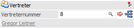
Ø Vertreter
Der hier angegebene Vertreter bzw. die Vertretergruppe gilt als Standardwert für alle Belegzeilen und wird für die Vertreterabrechnung / Vertreterprovisionierung verwendet. Der Standardwert stammt hierbei aus dem Personenkontenstamm (Register "FAKT").
Sollte der Vertreter bzw. die Vertretergruppe für einzelne Artikel abweichen, so kann Zuweisung pro Artikelzeile übersteuert werden.
Wird ein bereits bearbeiteter und einmal gespeicherter Beleg
bearbeitet, dann kann durch Anklicken des  Buttons der in diesem Feld eingegebene
Vertreter bzw. die Vertretergruppe auf alle bestehenden Erfassungszeilen kopiert
werden.
Buttons der in diesem Feld eingegebene
Vertreter bzw. die Vertretergruppe auf alle bestehenden Erfassungszeilen kopiert
werden.
Hinweis
Die Vertreterabrechnung kann grundsätzlich auf Basis von "einzelnen Vertretern", "fixen Vertretergruppen" oder "temporären (dynamischen) Vertretergruppen" erfolgen.
ü Einzelvertreter
Bei
Einzelvertretern wird ein Vertreter im Register "Zusatz" der Belegerfassung
eingetragen. Üblicherweise ist dieser Vertreter fix mit dem Kunden / Lieferanten
verbunden und wird bei der Belegbearbeitung bereits vorgeschlagen. Der
Provisionscode kann pro Belegzeile variiert werden.
Wird ein Vertreter bei
der Belegerfassung verwendet, welcher bereits auf inaktiv gesetzt ist (dies kann
durch die automatische Vorbelegung des Vertreters aus dem Personenkontenstamm
geschehen), erfolgt beim Speichern des Beleges eine entsprechende Meldung und
der Beleg kann nicht gespeichert werden.
Die Anlage von Vertretern wird im
Vertreterstamm durchgeführt (nähere Informationen entnehmen Sie dem WinLine
FAKT-Handbuch, Kapitel "Vertreter").
ü Vertretergruppen
Bei
Vertretergruppen wird ein Kunde / Lieferant von einer fix definierten Gruppe von
Vertretern bearbeitet, wobei die Zusammensetzung der Gruppe immer konstant
bleibt. Die Vertretergruppe definiert entweder die Provisionsbasis für die
individuellen Vertreter oder sie definiert den Gesamtprovisionsbetrag der
Vertretergruppe.
Die Anlage von Vertretergruppen wird im Vertreterstamm
durchgeführt (nähere Informationen entnehmen Sie dem WinLine FAKT-Handbuch,
Kapitel "Vertreter").
Beispiel
Jeder Vertreter ist einem Vertriebsleiter zugeordnet. D.h. ein Vertriebsleiter und ein Vertreter bilden immer eine Gruppe, wobei der Vertriebsleiter natürlich mehreren Gruppen angehören kann.
ü Temporäre (dynamische)
Vertretergruppen
Bei temporären / dynamischen Vertretergruppen werden Kunden
von wechselnden Vertreterteams bearbeitet. Die Teams werden von Auftrag zu
Auftrag neu gebildet. Die dynamische Vertretergruppe definiert entweder die
Provisionsbasis für die individuellen Vertreter oder sie definiert den
Gesamtprovisionsbetrag der Vertretergruppe.
Die Anlage der dynamischen
Vertretergruppe wird im Zuge der Belegerfassung durch Anwahl des Buttons  durchgeführt (nähere Informationen
entnehmen Sie bitte dem Kapitel Anlage
temporärer (dynamischer) Vertretergruppen und Auswertung temporärer (dynamischer)
Vertretergruppen).
durchgeführt (nähere Informationen
entnehmen Sie bitte dem Kapitel Anlage
temporärer (dynamischer) Vertretergruppen und Auswertung temporärer (dynamischer)
Vertretergruppen).
Ø Vertreterstamm
Durch Anwahl des Buttons wird der Vertreterstamm des hinterlegten Vertreters bzw. der Vertretergruppe geöffnet. Ist das Feld "Vertreter" leer oder ist 0 eingetragen, dann kann mit Hilfe des Buttons eine temporäre (dynamische) Vertretergruppe angelegt werden.
Preisoptionen
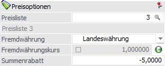
Ø Preisliste
Die Preisliste dient der Preisfindung und wird automatisch mit der Hinterlegung des jeweiligen Personenkontos gefüllt. Eine manuelle Änderung ist jederzeit möglich.
Ø Fremdwährung
Die Fremdwährung wird anhand der Preisliste vorbesetzt und kann manuell verändert werden. Die Fremdwährung gibt dabei folgendes an bzw. vor:
ü Währung des Belegs, d.h. in welcher Währung wird der gesamte Beleg erfasst
ü Umrechnung der Fremdwährung in Landeswährung für alle weiterführenden Auswertungen und die WinLine FIBU-Integration
Hinweis
Die Beträge des Belegs werden nach dem folgenden Schema auf die Landeswährung umgerechnet:
ü Fremdwährungsbetrag / Fremdwährungseinheit x Fremdwährungskurs
Hinweis
In fast allen Auswertungen steht die Möglichkeit zur Verfügung (ggfs. durch eine Formularanpassung), die Werte des Belegs in Landes- und / oder Fremdwährung zu betrachten.
Ø Fremdwährungskurs
An dieser Stelle wird der Kurs der Fremdwährung angezeigt (Details siehe Feld "Kursänderung"). Durch Aktivierung der Option "Kursänderung" kann an dieser Stelle eine manuelle Eingabe erfolgen.
Ø Fremdwährungshistorie
Durch einen Klick auf das Icon neben dem Fremdwährungskurs wird die Fremdwährungshistorie geöffnet. In diesem Fenster werden alle Kurse der Fremdwährung dargestellt, wobei ein beliebiger Kurs per Doppelklick in den Beleg übernommen werden kann.
Hinweis
Durch eine Kursübernahme wird die Option "Kursänderung" automatisch aktiviert (siehe Feld "Kursänderung").
Ø Kursänderung
Durch Aktivierung dieser Option wird der Kurs im Beleg festgeschrieben, d.h. bei der weiteren Bearbeitung wird nur dieser Kurs verwendet.
Wird die Checkbox hingegen nicht aktiviert, so wird der aktuelle Kurs in den Beleg geladen (ausgenommen sind Lieferantenfakturen, welche bereits in der Stufe "7. L.Lieferschein" gedruckt wurden).
Hinweis
Der aktuelle Kurs wird anhand des Belegdatums aus der Fremdwährungshistorie ermittelt. Sollte dort kein passender vorhanden sein, so wird der Kurs aus dem Fremdwährungsstamm (= aktuellste Kurs) verwendet.
Der Kurs wird auch bei Änderung des Belegdatums aktualisiert. Dies gilt auch für den automatischen Belegdruck.
Ø Summenrabatt
An dieser Stelle kann einen Summenrabatt-Prozentsatz (negative Eingabe) oder Zuschlag (positive Eingabe) eingetragen werden. Vorbesetzt wird das Feld dabei mit der Hinterlegung aus dem Personenkontenstamm (Register "FAKT").
Zahlungskondition
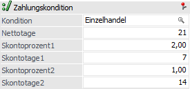
Ø Kondition
An dieser Stelle kann eine zuvor definierte Zahlungskondition für den Beleg gewählt werden, wobei eine Vorbesetzung aufgrund des Personenkontos stattfindet. Durch die Auswahl einer Kondition werden die Felder "Nettotage", "Skontoprozent 1", "Skontotage 1", "Skontoprozent 2" und "Skontotage 2" automatisch befüllt, können aber trotzdem manuell editiert werden. Eine Auswahl von inaktiven Zahlungskonditionen ist nicht möglich.
Hinweis 1
Wird ein Beleg für ein Personenkonto erfasst bei welchem eine inaktive Zahlungskondition hinterlegt ist, so wird auf dieses mit folgender Meldung hingewiesen, sobald in das Register "Zusatz" wechselt wird.
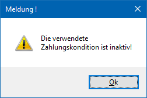
Hinweis 2
Ist in den FIBU-Parametern die Einstellung "Eingabe von Fälligkeits- und Skontodatum anstelle der Netto- und Skontotage" aktiviert, so stehen die Felder…
ü "Fälligkeitsdatum" anstelle der Nettotage
ü "Skontodatum1" anstelle der Skontotage1
ü "Skontodatum2" anstelle der Skontotage2
… zur Verfügung.
Hinweis 3
Werden die oben aufgeführten Felder (Nettotage, Skontoprozent 1, etc.) manuell verändert und danach das Belegdatum umgestellt, so werden diese Einstellungen wieder auf die Standardeinstellungen lt. Zahlungskondition zurückgesetzt. Dies erfolgt jedoch nur bei Zahlungskonditionen, welche im Zahlungskonditionen-Stamm NICHT die Einstellung "Konditionen" aufweisen!
WinLine FIBU
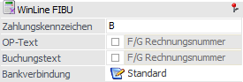
Ø Zahlungskennzeichen
Hier wird das Zahlungskennzeichen, welches im Personenkontenstamm (Register "FIBU") hinterlegt wurde, angezeigt und kann manuell verändert werden. Das Zahlungskennzeichen wird automatisch in die WinLine FIBU übergeben und dient dort zur Selektion im Zahlungsverkehr (Bereich "Selektion - Fakturen" - Feld "OP-Kennz.").
Ø OP-Text
Hier wird der OP-Text angezeigt, welcher in die Finanzbuchhaltung übergeben wird. Wurde in der Belegart (Register "FIBU/KORE") keine spezielle Vorbelegung getroffen, so wird der OP-Text aus dem Buchungstext gebildet (siehe Feld "Buchungstext).
Hinweis
Durch Aktivierung der Option "OP-Textänderung" kann an dieser Stelle eine manuelle Eingabe erfolgen.
Ø OP-Textänderung
Wird diese Option aktiviert, so kann der vorgeschlagene OP-Text editiert werden.
Ø Buchungstext
Hier wird der Buchungstext angezeigt, welcher in die Finanzbuchhaltung übergeben wird. Wurde in der Belegart (Register "FIBU/KORE") keine spezielle Vorbelegung getroffen, so wird in den Stufen "1- Angebot" bis "3 - Lieferschein" bzw. "5 - L.Anfrage" bis "7 - L.Lieferschein" der Vorschlag "F/G Rechnungsnummer" angezeigt. In der Stufe "4 - Faktura" bzw. "8 - L.Faktura" wird dann "F/G + die nächste hochgezählte Rechnungsnummer" ausgewiesen. Diese Vorgabe kann sich beim Druck des Belegs ändern, wenn z.B. in der Zwischenzeit auf einem anderen Arbeitsplatz ebenfalls eine Faktura gedruckt wurde und die vorgeschlagene Nummer damit bereits vergeben wurde.
Hinweis
Durch Aktivierung der Option "Buchungstextänderung" kann an dieser Stelle eine manuelle Eingabe erfolgen.
Ø Buchungstextänderung
Wird diese Option aktiviert, so kann der vorgeschlagene Buchungstext editiert werden.
Ø Bankverbindung
Wird ein Beleg des Typs "4 - Faktura" bzw. "8 - L.Faktura" gedruckt, so wird die hier hinterlegte Bankverbindung in den entstehenden FIBU-OP geschrieben. Die Standardbankverbindung stammt hierbei aus dem Personenkontenstamm (Register "Stamm").
Über den Button kann dem Beleg (entstehenden FIBU-OP) eine "andere" Bankverbindung aus dem jeweiligen Personenkontenstamm zugewiesen werden. Durch Drücken des Buttons öffnet sich hierfür das Fenster "Bankverbindungen", in welchem eine Bankverbindung gewählt werden kann.
Beispiel
Im Beleg wird angezeigt. Durch Anwahl des Buttons werden die Bankverbindungen des Personenkontos geöffnet und das hinterlegte Volksbankkonto ausgewählt. Dadurch wird die Beschreibung des Buttons von auf geändert und dem entstehenden OP das Volksbankkonto zugewiesen.
Hinweis
Der Andruck der gewählten Bankverbindung auf den Belegformularen kann mittels Variablen aus der Tabelle 288 (Bankverbindungen) erfolgen.
Zuordnungen
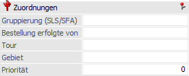
Ø Gruppierung (SLS/SFA)
In diesem Feld kann ein 10stelliger alphanumerischer Text als Kennzeichen für die Gruppierung bei der Sammellieferschein- und Sammelfakturenerstellung eingegeben werden. Dieses Feld steht auch in Belegvorlagen zur Verfügung, d.h. ein Wert kann über Batchbeleg exportiert und importiert werden. Im Fenster "Sammelfakturen" kann das Kennzeichen als Gruppierungs-Merkmal verwendet werden.
Beispiel
Es liegen verschiedene Lieferscheine für den gleichen Kunden, aber mit unterschiedlichen Bankverbindungen in den Belegen, vor. Beim Erzeugen von Sammelfakturen sollen die Lieferscheine nach der Bankverbindung zuerst gruppiert werden und dann nach anderen Kriterien wie Lieferscheinnummer, Projektnummer, usw. sortiert werden. Zu diesem Zweck wird daher die gewählte Bankverbindung über eine Belegkopfformel beim Speichern des Lieferscheins ins Feld "Gruppierung für SF" geschrieben.
Hinweis
Groß-/Kleinschreibung-Erkennung ist für das Kennzeichen aktiv. Die WinLine unterscheidet beispielsweise zwischen einer Eingabe von "k1" und einer von "K1".
Ø Bestellung erfolgte von
Dieses Feld dient als reines Informationsfeld und greift auf keinerlei Stammdaten zurück. Eine Eingabe kann auf Belegen angedruckt werden.
Ø Tour / Gebiet
Hier können die Tour und das Gebiet hinterlegt werden. Auf diese Daten können z.B. in den Programmen Kundenbestellungen bearbeiten und Packliste drucken zugegriffen werden (jeweils als Selektionskriterium).
Achtung
Standardmäßig erfolgt die Vorbesetzung dieser beiden Felder mit den Werten der Lieferadresse (unabhängig davon, welches Konto als Hauptkonto definiert ist)!
Ø Priorität
An dieser Stelle kann eine maximal 5-stellige Priorität eingegeben werden, mit welcher der Kunde beliefert werden soll (Programm "Kundenbestellungen bearbeiten"). Das Feld kann dabei auch mit einer (im Personenkontenstamm, Register "FAKT") hinterlegte Priorität automatisch belegt werden.
Hinweis
Im Zusammenhang mit Produktionsartikel kann diese im Beleg hinterlegte Priorität direkt in den Produktionsauftrag übernommen werden. Wenn der Produktionsauftrag direkt aus einem Angebot erzeugt wurde und bei der nachfolgenden Auftragserfassung die Priorität geändert wird, dann erfolgt auch eine automatische Aktualisierung der Priorität im Produktionsauftrag.
Erweiterte Optionen
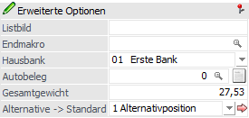
Ø Listbild
An dieser Stelle kann von dem Standardlistbild auf ein abweichendes Listbild gewechselt werden. Die Eingabe ist dabei maximal 2-stellig (alphanummerisch) und kann per Belegart (Register "Ausdruck") vorbesetzt werden.
Beispiel
Das Standardlistbild der Faktura lautet P02W44. Wenn für den Druck in einer amerikanischen Variante das Formular mit dem Namen P02W44US genutzt werden soll, dann muss an dieser Stelle US hinterlegt werden.
Hinweis
Alternative Listbilder können von Ihrem mesonic-Fachhandelspartner erstellt werden.
Ø Endmakro
Eingabe bzw. automatischer Abruf der Makrofunktion aus der Belegart (Belegendmakro). Dieses Makro wird einmalig beim Rechnen bzw. Drucken des Belegs ausgeführt.
Ø Hausbank
An dieser Stelle besteht die Möglichkeit eine Hausbank einzugeben, diese kann in der Belegart vorbelegt werden. In weiterer Folge können die zugehörigen Bankdaten auch im Formular angedruckt werden. Die Anlage von Hausbanken kann im Bankenstamm in der Applikation FIBU vorgenommen werden.
Ø Autobeleg
Jeder Beleg kann als Ausgangsbeleg für den Autobeleg verwendet werden. Über das Feld "Autobeleg" kann hierfür manuell eine Verknüpfung zwischen Beleg und einer Zeile des Aktionsplanes erstellt werden.
Durch Drücken der F9-Taste kann dabei aus den Aktionen jene gewählt werden, welche mit dem Beleg verbunden werden soll (die Auswahl erfolgt durch Doppelklick auf die Zeilennummer in der Aktionstabelle).
Ø erzeugte Belege
Durch Anklicken dieses Buttons wird eine Übersicht über alle (durch den Autobeleg) erzeugten Belege, auf Grundlage der zugewiesenen Zeilennummer (siehe Feld "Autobeleg"), angezeigt.
Ø Gesamtgewicht
In diesem Feld kann das Gesamtgewicht des Beleges manuell eingetragen werden. Über eine Belegformel kann dieses Feld (Variable 0/643) ebenfalls befüllt werden.
Ø Alternative -> Standard
Mit dieser Option können bestimmte Alternativpositionen zur "Standardposition" umgestellt werden.
Hinweis
Die Funktion "Alternative -> Standard" steht nur zur Verfügung, wenn zumindest eine Position in der Belegmitte auf alternativ (Spalte "Alternativposition" => 1 bis 9) definiert wurde.
Aus der Auswahllistbox kann jene Alternativpositionsebene
gewählt werden, deren Belegmittelteilszeilen auf die Alternativpositionsstufe "0
- Standard" umgestellt werden soll. Zur Umstellung selbst muss nach Auswahl der
Alternative das - Symbol angewählt
werden.
Beispiel
Durch Anwählen des - Symbols werden alle
Belegmittelteilszeilen, die als Alternativposition den Eintrag "5 -
Alternativposition 5" hinterlegt haben, auf die Alternativposition "0 -
Standard" gesetzt. Dazu wird zusätzlich eine entsprechende Meldung angezeigt,
welche mit "Ja" bestätigt werden muss:
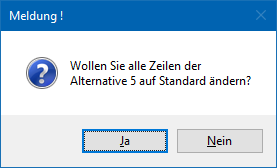
Nach durchgeführter Umstellung wird ein Hinweis bezüglich der geänderten Belegzeilen angezeigt:
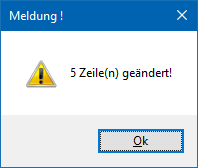
Hinweis
Sind von der Umstellung auch aufgeteilte Hauptartikel "betroffen", so wird in der Zeilenanzahl nur der Hauptartikel berücksichtigt.
Vorbelegungen (Lagerort / Ausprägung)
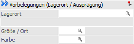
Ø Lagerort
Sobald an dieser Stelle ein Lagerort hinterlegt wurde, erfolgt bei Erfassung eines Artikels mit Lagerortstruktur eine automatische Lagerortaufteilung, d.h. das Fenster Lagerorte erfassen wird in der Regel nicht geöffnet. Der Ort muss dabei nicht der letzten Hierarchie-Ebene entsprechen und wird gemäß Belegart (Register "Erweitert") vorbelegt.
Hinweis
Eine detaillierte Beschreibung der Voraussetzungen bzw. Arbeitsabläufe kann dem Kapitel Belegerfassung - Register "Mitte" - Automatische Lagerortaufteilung entnommen werden.
Ø Ausprägung 1 (hier "Größe / Ort") / Ausprägung 2 (hier "Farbe")
Dieser Felder können nur dann bearbeitet werden, wenn Artikel mit Ausprägungen (Größen, Farben, etc.) verwendet werden. Abhängig vom Personenkonto / der Belegart / der Artikel kann an dieser Stelle eine Vorbesetzung der Ausprägungen vorgenommen werden, welche bei der Artikelerfassung berücksichtigt werden soll. Dadurch kann gesteuert werden, dass z.B. der Kunde X seine Artikel immer nur aus dem Lager "Wien" bekommen soll. Dies gilt auch für Ausprägungsartikel, die in einer Stückliste vorkommen.
Hinweis
Durch die Funktion "Aufteilungsfenster öffnen" im Register "Optionen" wird die Vorbelegung außer Kraft gesetzt. D.h. wurde die Option "Aufteilungsfenster öffnen" aktiviert, so wird das Aufteilungsfenster immer geöffnet.